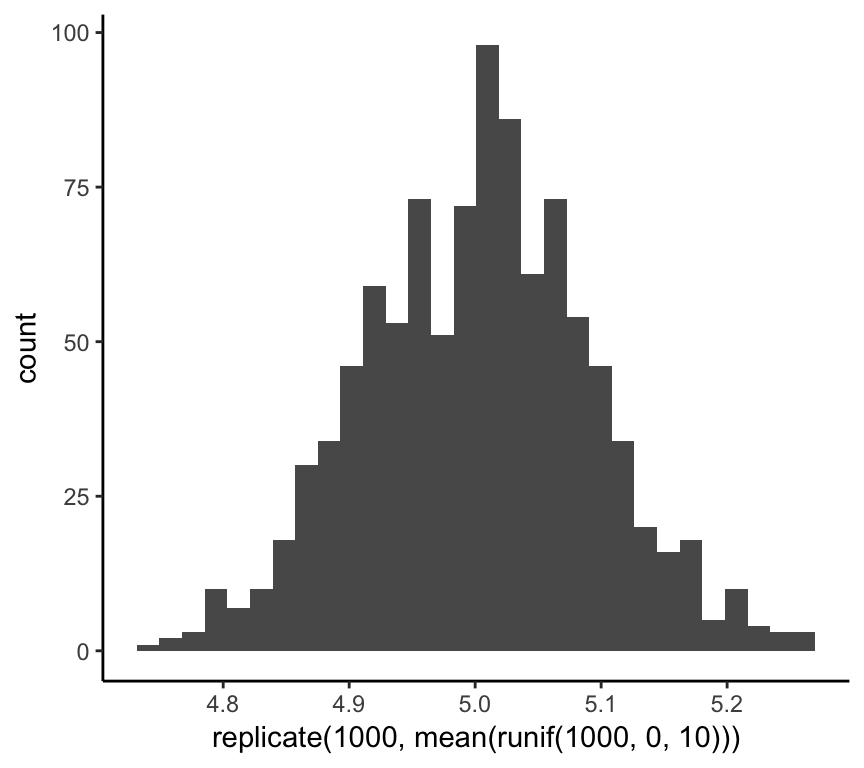

Chapter: 2 Simulation
By the end of this chapter, you will be able to:
- explain the value of simulating data and analysis in R
- describe the goals/benefits of functional programming
- use a variety of different methods for generating your own data using R’s built-in random number generators
2.1 Why simulate data?
One way to learn statistics is to TODO
Simulating data allows you to quickly:
- Test your statistical intuitions
- Experiment with new techniques on data where you already know the answers
2.2 Setting the seed
By design, simulations in R are generated randomly. But sometimes you want to reproduce a set of simulations to show others (or your future self) what you did. To accomplish this, you need to use the set.seed() function.1 Compare the output of the following two code chunks:
c(rnorm(n = 1, mean = 5, sd = 3), rnorm(n = 1, mean = 5, sd = 3))## [1] 5.542366 8.345650set.seed(45)
c(rnorm(n = 1, mean = 5, sd = 3), rnorm(n = 1, mean = 5, sd = 3))## [1] 6.022399 2.889979set.seed(45)
c(rnorm(n = 1, mean = 5, sd = 3), rnorm(n = 1, mean = 5, sd = 3))## [1] 6.022399 2.8899792.3 Generating samples from probability distributions
First argument is always the number of samples to generate n. Then you provide the parameters of the distribution
rnorm(n, ...)rpois(n, ...)rbeta(n, ...)runif((n, ...))rbinom((n, ...))
2.4 Repetition
Often we will want to simulate repeated draws of samples from these probability distributions. One setting is when we want to simulate an experiment with multiple participants who each complete multiple trials. In this case, if our experiment consisted of 60 trials, then each trial could be modeled as a sample from the probability distribution, e.g., rnorm(n = 60, ...), but if we wanted to simulate more participants, say N = 100, then we would have to write rnorm(n = 60, ...) 100 times. That’s way too much typing!
Fortunately, R has a built-in function for repeating an expression called replicate(). The replicate() function takes two arguments:
nthe number of times to repeat the expressionexprthe expression that we want to repeat
For example, we can write one line of code that can generate a sample (any size we choose) from a uniform distribution, take the mean of each sample, and plot those means as a histogram.
qplot(replicate(1000, mean(runif(1000, 0, 10))), geom= "histogram", bins = 30)
But what if we want to do this with other types of distributions? Well, we can extend or make a more general version of this function.
A quick aside on functional programming. When writing code, the golden rule of functional programming is “Don’t repeat yourself!” If you find yourself writing the same thing more than once, then it is time to turn that code into a function that you can easily use again in future settings.
sim_means_plot <- function(n_rep, n_samp, d, size, m = 0,
sd = 1, prob = 0.5, min = 0, max = 1,
lambda = 1) {
sims <- switch(d,
normal = replicate(n_rep, mean(rnorm(n = n_samp, m = m, sd = sd))),
binomial = replicate(n_rep, mean(rbinom(n = n_samp, size = size, prob = prob))),
uniform = replicate(n_rep, mean(runif(n = n_samp, min = min, max = max))),
poisson = replicate(n_rep, mean(rpois(n = n_samp, lambda = lambda)))
) %>%
as.data.frame()
names(sims) <- "value"
ggplot(aes(x = value), data = sims) +
geom_histogram()
}Let’s test the function.
sim_means_plot(n_rep = 10000, n_samp = 100, d = "poisson", lambda = 1)## `stat_bin()` using `bins = 30`. Pick better value with `binwidth`.
Pretty cool, right! Now we can simulate data that has been generated from a varitey of probability distributions, take the mean of that data, and visualize the distribution of those means. In statistics, this is called the sampling distribution, and is a foundational concept for hypothesis testing, which will be covered later in the book.
Now that we have set up the basic tools in our simulation toolkit, we can write code to improve our statistical intuitions. This is the focus of the rest of this book.
If you are interested in the details of the set.seed() function, you can type
?set.seedinto the interpreter.↩